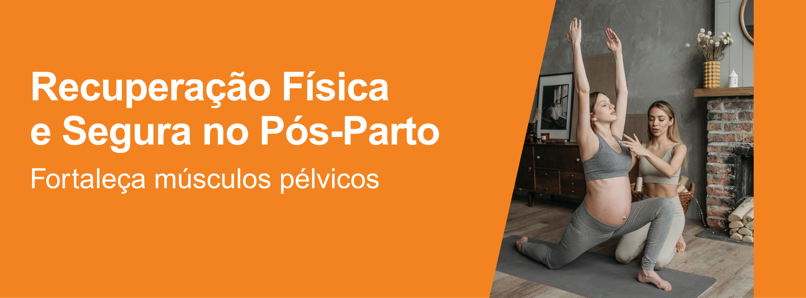
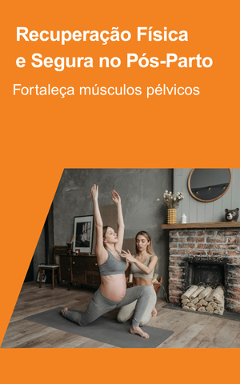
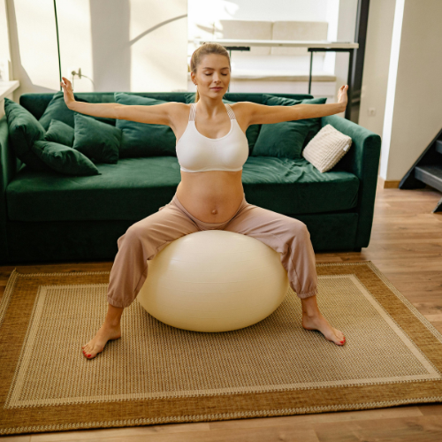
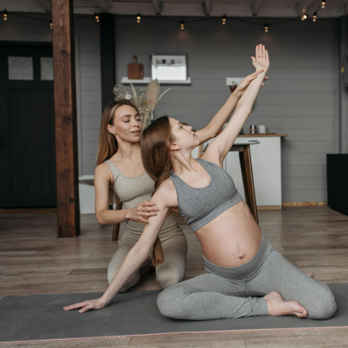
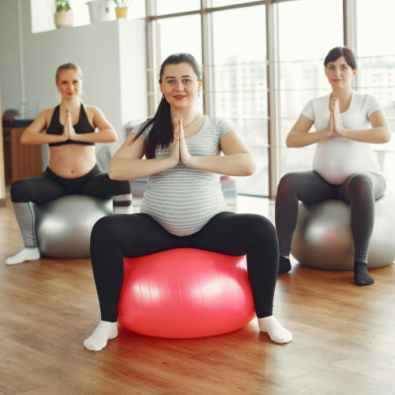

Preparação Corporal para o Parto Natural
Fortaleça músculos pélvicos e abdominais com exercícios seguros,
melhorando postura e respiração. Nossa abordagem personalizada
prepara seu corpo para o trabalho de parto, reduzindo complicações
e promovendo uma experiência mais tranquila e consciente para você
durante toda a jornada.

Alívio de Dores Durante a Gestação
Técnicas manuais e recursos terapêuticos modernos atuam diretamente na
lombar, quadril e ciático. Tratamentos não invasivos aliviam desconfortos
comuns, mantendo mobilidade e bem-estar. Você merece acompanhar a gravidez
com conforto, disposição e saúde integral plena em cada trimestre.


Recuperação Física e Segura no Pós-Parto
Cuidamos da reabilitação do assoalho pélvico e da cicatrização
muscular após o parto. Com acompanhamento especializado, previnimos
disfunções futuras e restauramos sua força corporal. Retome
atividades diárias com segurança, autonomia e confiança renovada
para uma maternidade equilibrada desde cedo.